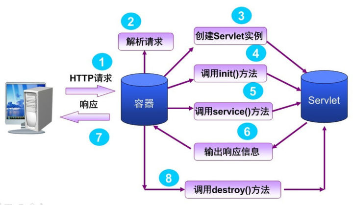

Servlet
1 | public interface Servlet { |
Servlet 接口定义了一套处理网络请求的规范，所有实现 Servlet 的类或所有想要处理网络请求的类，都需要实现那5个方法，其中最主要的是两个生命周期方法 init() 和 destroy()，还有一个处理请求的 service()。

Servlet 不会直接和客户端打交道，而是由 Servlet 容器负责（比如Tomcat）。
当容器启动的时候，Servlet 类就会被初始化，容器监听端口，请求过来后，根据 URL 等信息，确定要将请求交给哪个 Servlet 处理，然后调用 Servlet 的具体 service 方法，service 方法返回一个 response 对象，容器再把这个 response 返回给客户端。
比如：Spring 的 DispatcherServlet（前端控制器） 就实现了 Servlet 这个接口。
Spring
https://blog.csdn.net/u013821825/article/details/51385633
介绍 Spring 框架
它是一个一站式（full-stack 全栈式）框架，SpringMVC 提供了从表现层到业务层再到持久层的一套完整的解决方案。我们在项目中可以只使用 Spring 一个框架，它就可以提供表现层的 MVC 框架，持久层的 Dao 框架。它的两大核心 IoC 和 AOP 更是为我们程序解耦和代码简洁易维护提供了支持。
Spring 优点
- 降低了组件之间的耦合性，实现了软件各层之间的解耦。
- 可以使用 Spring 提供的众多服务，如事务管理，消息服务等。
- 容器提供单例模式支持。
- 容器提供了 AOP 技术，利用它很容易实现如权限拦截，运行期监控等功能。
- Spring 对于主流的应用框架提供了集成支持，如 Hibernate，JPA 等。
- Spring 属于低侵入式设计，代码的污染极低。
- 独立于各种应用服务器。
- Spring 的 DI 机制降低了业务对象替换的复杂性。
- Spring 的高度开放性，并不强制应用完全依赖于 Spring，开发者可以自由选择 Spring 的部分或全部。
Spring Bean 的作用域
Spring 容器中的 Bean 可以分为5个范围：
Singleton：这种 Bean 范围是默认的，这种范围确保不管接受到多少个请求，每个容器中只有一个 Bean 的实例，单例的模式由 Bean factory 自身来维护。
Prototype：原形范围与单例范围相反，为每一个 Bean 请求提供一个实例。
Request：在请求 Bean 范围内会每一个来自客户端的网络请求创建一个实例，在请求完成以后，Bean 会失效并被垃圾回收器回收。
Session：与请求范围类似，确保每个 Session 中有一个 Bean 的实例，在 Session 过期后，Bean 会随之失效。
Global-session：Global-session 和 Portlet 应用相关。当应用部署在 Portlet 容器中工作时，它包含很多 portlet。如果想要声明让所有的 portlet 共用全局的存储变量的话，那么这全局变量需要存储在 Global-session 中。
全局作用域与 Servlet 中的 Session 作用域效果相同。
Spring 自动装配的方式
No：不启用自动装配。
byName：通过属性的名字查找 Bean 依赖的对象并为其注入。比如说类 Computer 有个属性 printer，指定其 autowire 属性为 byName 后，IoC 容器会查找 id/name 属性为 printer 的 Bean，然后使用 Setter 方法注入。
byType：通过属性的类型查找 Bean 依赖的对象并为其注入。比如类 Computer 有个属性 printer，类型为 Printer，指定其autowire 属性为 byType 后，IoC 容器会查找 Class 属性为 Printer 的 Bean，使用 Setter 方法注入。
constructor：和 byType 一样，也是通过类型查找依赖对象，区别在于它不是使用 Setter 方法注入，而是使用构造进行注入。
autodetect：在 byType 和 constructor 之间自动选择注入方式。
default：由上级标签
的 default-autowire 属性确定。
Spring 的核心类有哪些，各自作用
BeanFactory：产生一个新的实例，可以实现单例模式。
BeanWrapper：提供统一的 get 及 set 方法。
ApplicationContext：提供框架的实现，包括 BeanFactory 的所有功能。
Spring 处理请求过程
简短：
- 用户请求到达 DispatcherServlet，DispatcherServlet 根据请求信息（如URL）来决定选择 Handler（页面控制器）进行处理并把请求委托给它。
- Handler 接收到请求后，进行功能处理，首先需要收集和绑定请求参数到一个命令对象，并进行验证，然后将命令对象委托给业务对象进行处理；处理完毕后返回一个 ModelAndView（模型数据和逻辑视图名）。
- DispatcherServlet 收回控制权，根据返回的逻辑视图名，选择相应的视图进行渲染，并把模型数据传入以便视图渲染。
- DispatcherServlet 再次收回控制权，将响应返回给用户。
https://blog.csdn.net/mishifangxiangdefeng/article/details/52763546
详细：
- DispatcherServlet 接收发过来的请求，然后请求 HandlerMapping（处理器映射器），让其根据 xml 配置、注解等查找 Handler（处理器）。
- HandlerMapping 向 DispatcherServlet 返回 HandlerExecutionChain（执行链），其包含一个 Handler 和多个 HandlerInterceptor（拦截器）。
- DispatcherServlet 获取 Handler 对应的 HandlerAdapter（处理器适配器），然后让 HandlerAdapter 去执行 Handler。
- Handler 执行完成后，向 HandlerAdapter 返回 ModelAndView（包括模型数据、逻辑视图名），HandlerAdapter 再向 DispatcherServlet 返回 ModelAndView。
- DispatcherServlet 请求 ViewResolver（视图解析器）进行视图解析。
- ViewResolver 向 DispatcherServlet 返回 View。
- DispatcherServlet 渲染视图，填充 Model 模型数据（在 ModelAndView 中）。
- 最后 DispatcherServlet 向用户响应结果。
详细过程：https://blog.csdn.net/uhgagnu/article/details/59157840
IoC 和 DI 区别
IoC = Inversion of Control 控制反转，传统过程中，通常由调用者来创建被调用者的实例对象。但在 Spring 中创建的工作由 Spring 容器完成。
DI 依赖注入，指 Spring 创建对象的过程中，将对象依赖属性通过配置进行注入。
Spring 用到的设计模式
- 代理模式：在 AOP 和 remoting 中被用的比较多。
- 单例模式：在 Spring 配置文件中定义的 Bean 默认为单例模式。
- 模板方法：用来解决代码重复的问题。比如 RestTemplate、JmsTemplate、JpaTemplate。
- 前端控制器：Srping 提供了 DispatcherServlet 来对请求进行分发。
- 视图帮助（View Helper）：Spring 提供了一系列的 JSP 标签，高效宏来辅助将分散的代码整合在视图里。
- 依赖注入：贯穿于 BeanFactory / ApplicationContext 接口的核心理念。
- 工厂模式：BeanFactory 用来创建对象的实例。
BeanFactory 接口和 ApplicationContext 接口区别
ApplicationContext 接口继承 BeanFactory 接口，Spring 核心工厂是 BeanFactory ,BeanFactory 采取延迟加载，第一次 getBean 时才会初始化 Bean, ApplicationContext 是会在加载配置文件时初始化 Bean。
ApplicationContext 接口扩展 BeanFactory，它可以进行国际化处理、事件传递和 Bean 自动装配以及各种不同应用层的 Context 实现
开发中基本都在使用 ApplicationContext, web 项目使用 WebApplicationContext ，很少用到 BeanFactory。
Spring AOP 的应用场景、原理、优点
AOP = Aspect Oriented Programming 面向切面编程
用来封装横切关注点，可以在下面的场景中使用：Authentication 权限、Caching 缓存、Context passing 内容传递、Error handling 错误处理、Lazy loading 懒加载、Debugging 调试、logging, tracing, profiling and monitoring 记录跟踪优化 校准、Performance optimization 性能优化、Persistence 持久化、Resource pooling 资源池、Synchronization 同步、Transactions 事务。
原理：AOP是面向切面编程，是通过动态代理的方式为程序添加统一功能，集中解决一些公共问题。
优点：
- 各个步骤之间的良好隔离性耦合性大大降低。
- 源代码无关性，再扩展功能的同时不对源码进行修改操作。
Spring AOP 里面的几个名词
切面（Aspect）：一个关注点的模块化，这个关注点可能会横切多个对象。事务管理是J2EE应用中一个关于横切关注点的很好的例子。 在Spring AOP中，切面可以使用通用类（基于模式的风格） 或者在普通类中以 @Aspect 注解（@AspectJ风格）来实现。
连接点（Joinpoint）：在程序执行过程中某个特定的点，比如某方法调用的时候或者处理异常的时候。 在Spring AOP中，一个连接点 总是 代表一个方法的执行。 通过声明一个org.aspectj.lang.JoinPoint类型的参数可以使通知（Advice）的主体部分获得连接点信息。
通知（Advice）：在切面的某个特定的连接点（Joinpoint）上执行的动作。通知有各种类型，其中包括“around”、“before”和“after”等通知。 通知的类型将在后面部分进行讨论。许多AOP框架，包括Spring，都是以拦截器做通知模型， 并维护一个以连接点为中心的拦截器链。
切入点（Pointcut）：匹配连接点（Joinpoint）的断言。通知和一个切入点表达式关联，并在满足这个切入点的连接点上运行（例如，当执行某个特定名称的方法时）。 切入点表达式如何和连接点匹配是AOP的核心：Spring缺省使用AspectJ切入点语法。
引入（Introduction）：（也被称为内部类型声明（inter-type declaration））。声明额外的方法或者某个类型的字段。 Spring允许引入新的接口（以及一个对应的实现）到任何被代理的对象。例如，你可以使用一个引入来使bean实现 IsModified 接口，以便简化缓存机制。
目标对象（Target Object）： 被一个或者多个切面（aspect）所通知（advise）的对象。也有人把它叫做 被通知（advised） 对象。 既然Spring AOP是通过运行时代理实现的，这个对象永远是一个 被代理（proxied） 对象。
AOP代理（AOP Proxy）： AOP框架创建的对象，用来实现切面契约（aspect contract）（包括通知方法执行等功能）。 在Spring中，AOP代理可以是JDK动态代理或者CGLIB代理。 注意：Spring 2.0最新引入的基于模式（schema-based）风格和@AspectJ注解风格的切面声明，对于使用这些风格的用户来说，代理的创建是透明的。
织入（Weaving）：把切面（aspect）连接到其它的应用程序类型或者对象上，并创建一个被通知（advised）的对象。 这些可以在编译时（例如使用AspectJ编译器），类加载时和运行时完成。 Spring和其他纯Java AOP框架一样，在运行时完成织入。
通知有哪些类型
前置通知（Before advice）
在某连接点（join point）之前执行的通知，但这个通知不能阻止连接点前的执行（除非它抛出一个异常）。
返回后通知（After returning advice）
在某连接点（join point）正常完成后执行的通知：例如，一个方法没有抛出任何异常，正常返回。
抛出异常后通知（After throwing advice）
在方法抛出异常退出时执行的通知。
后通知（After (finally) advice）
当某连接点退出的时候执行的通知（不论是正常返回还是异常退出）。
环绕通知（Around Advice）
包围一个连接点（join point）的通知，如方法调用。这是最强大的一种通知类型。 环绕通知可以在方法调用前后完成自定义的行为。它也会选择是否继续执行连接点或直接返回它们自己的返回值或抛出异常来结束执行。
环绕通知是最常用的一种通知类型。大部分基于拦截的AOP框架，例如Nanning和JBoss4，都只提供环绕通知。
切入点（pointcut）和连接点（join point）匹配的概念是AOP的关键，这使得AOP不同于其它仅仅提供拦截功能的旧技术。 切入点使得定位通知（advice）可独立于OO层次。 例如，一个提供声明式事务管理的around通知可以被应用到一组横跨多个对象中的方法上（例如服务层的所有业务操作）。
Spring 5个标准事件
- 上下文更新事件（ContextRefreshedEvent）：该事件会在 ApplicationContext 被初始化或者更新时发布。也可以在调用 ConfigurableApplicationContext 接口中的 refresh() 方法时被触发。
- 上下文开始事件（ContextStartedEvent）：当容器调用 ConfigurableApplicationContext 的 Start() 方法开始/重新开始容器时触发该事件。
- 上下文停止事件（ContextStoppedEvent）：当容器调用 ConfigurableApplicationContext 的 Stop() 方法停止容器时触发该事件。
- 上下文关闭事件（ContextClosedEvent）：当 ApplicationContext 被关闭时触发该事件。容器被关闭时，其管理的所有单例 Bean 都被销毁。
- 请求处理事件（RequestHandledEvent）：在 Web 应用中，当一个 http 请求（request）结束触发该事件。
除了上面介绍的事件以外，还可以通过扩展 ApplicationEvent 类来开发自定义的事件：
1 | public class CustomApplicationEvent extends ApplicationEvent { |
Mybatis
#{} 和 ${} 的区别
${}
Properties 配置文件中的变量占位符，它可以用于标签属性值和 SQL 内部，属于静态文本替换，比如 ${driver} 会被静态替换为 com.mysql.jdbc.Driver。
#{}
SQL 的参数占位符，Mybatis 会将 SQL 中的 #{} 替换为 ? 号，在 SQL 执行前会使用 PreparedStatement 预编译的参数设置方法，按序给 SQL 的 ? 号占位符设置参数值，比如 ps.setInt(0, parameterValue)，#{item.name} 的取值方式为使用反射从参数对象中获取 item 对象的 name 属性值，相当于 param.getItem().getName()。
Xml 映射中有哪些标签
除了常见的 select | insert | updae | delete 标签外，还有：
动态 SQL 的9个标签，trim | where | set | foreach | sql | if | choose | when | otherwise | bind 等，其中
1 | <sql id="select"> |
Xml 映射和 Dao 接口
通常一个 Xml 映射文件，都会写一个 Dao 接口与之对应，这个 Dao 接口的工作原理是什么？Dao 接口里的方法，参数不同时，方法能重载吗？
在 Mybatis 中，每一个
Dao 接口就是通常所说的 Mapper 接口，Xml 映射文件中的 namespace 的值就是接口的全限名（Java 包下具体的接口路径，比如 com.mapper.UserMapper），接口的方法名就是映射文件中 MappedStatement 的 id 值，接口方法内的参数，就是传递给 SQL 的参数。
Mapper 接口是没有实现类的，当调用接口方法时，接口全限名 + 方法名拼接字符串作为 key 值，可唯一定位一个 MappedStatement，比如 com.mybatis3.mappers.UserMapper.findUserById，可以唯一找到 XML 中 namespace 为 com.mybatis3.mappers.UserMapper 下面 id = findUserById 的 MappedStatement。
Dao 接口里的方法不能重载，因为是全限名 + 方法名的保存和寻找策略。
Dao 接口的工作原理是 JDK 动态代理，Mybatis 运行时会使用动态代理为 Dao 接口生成代理 proxy 对象，代理对象会拦截接口方法，转而执行 MappedStatement 所代表的 SQL，然后将 SQL 执行结果返回。
Mybatis 如何分页，分页插件的原理
Mybatis 使用 RowBounds 对象进行分页，它是针对 ResultSet 结果集执行的内存分页，而非物理分页，可以在 SQL 内直接书写带有物理分页的参数来完成物理分页功能，也可以使用分页插件来完成物理分页。
分页插件的基本原理是使用 Mybatis 提供的插件接口，实现自定义插件，在插件的拦截方法内拦截待执行的 SQL，然后重写 SQL，根据dialect 方言，添加对应的物理分页语句和物理分页参数。
比如 select from student，拦截 SQL 后重写为 select t. from （select * from student）s limit 0，10。
Mybatis 的插件运行原理，以及如何编写一个插件
Mybatis 使用 JDK 的动态代理，为需要拦截的接口生成代理对象以实现接口方法拦截功能，每当执行这4种接口对象的方法时，就会进入拦截方法，具体就是 InvocationHandler 的 invoke() 方法，当然，只会拦截那些你指定需要拦截的方法。
编写一个插件：
只能编写针对 ParameterHandler、ResultSetHandler、StatementHandler、Executor 这4种接口的插件。
实现 Mybatis 的 Interceptor 接口并复写 intercept() 方法，然后再给插件编写注解，指定要拦截哪一个接口的哪些方法即可，别忘了在配置文件中配置你编写的插件。
Mybatis 动态 SQL 是做什么的？都有哪些？简述一下执行原理？
Mybatis 动态 SQL 可以让我们在 Xml 映射文件内，以标签的形式编写动态 SQL，完成逻辑判断和动态拼接 SQL 的功能，Mybatis 提供了9种动态 SQL 标签 trim | where | set | foreach | if | choose | when | otherwise | bind。
其执行原理为，使用 OGNL（Object Graphic Navigation Language，对象图导航语言）从 SQL 参数对象中计算表达式的值，根据表达式的值动态拼接 SQL，以此来完成动态 SQL 的功能。
Mybatis 是如何将 SQL 执行结果封装为目标对象并返回的？都有哪些映射形式？
两种方式映射：
- 使用
标签，逐一定义列名和对象属性名之间的映射关系。 - 使用 SQL 列的别名功能，将列别名书写为对象属性名，比如 T_NAME AS NAME，对象属性名一般是 name，小写。但是列名不区分大小写，Mybatis 会忽略列名大小写，智能找到与之对应对象属性名，你甚至可以写成 T_NAME AS NaMe，Mybatis 一样可以正常工作。
有了列名与属性名的映射关系后，Mybatis 通过反射创建对象，同时使用反射给对象的属性逐一赋值并返回，那些找不到映射关系的属性，是无法完成赋值的。
Mybatis 能执行一对一、一对多的关联查询吗？有哪些实现方式？它们之间的区别？
Mybatis 不仅可以执行一对一、一对多的关联查询，还可以执行多对一，多对多的关联查询，多对一查询。
多对多查询，其实就是一对多查询，只需要把 selectOne() 修改为 selectList() 即可。
关联对象查询有两种实现方式：
- 单独发送一个 SQL 去查询关联对象，赋给主对象，然后返回主对象。
- 使用嵌套查询，嵌套查询的含义为使用 join 查询，一部分列是 A 对象的属性值，另外一部分列是关联对象 B 的属性值，好处是只发一个 SQL 查询，就可以把主对象和其关联对象查出来。
那么问题来了，join 查询出来100条记录，如何确定主对象是5个，而不是100个？其去重复的原理是
同样主对象的关联对象，也是根据这个原理去重复的，尽管一般情况下，只有主对象会有重复记录，关联对象一般不会重复。
比如：下面 join 查询出来6条记录：
一、二列是 Teacher 对象列，第三列为 Student 对象列，Mybatis 去重处理后，结果为1个老师6个学生，而不是6个老师6个学生。
| teacher_id | teacher_name | student_id | ||
|---|---|---|---|---|
| 1 | teacher | 38 | ||
| 1 | teacher | 39 | ||
| 1 | teacher | 40 | ||
| 1 | teacher | 41 | ||
| 1 | teacher | 42 | ||
| 1 | teacher | 43 |
Mybatis 是否支持延迟加载？如果支持，它的实现原理是什么？
Mybatis 仅支持 association 关联对象和 collection 关联集合对象的延迟加载。
association 指一对一查询，collection 指一对多查询。
在 Mybatis 配置文件中，可以配置是否启用延迟加载 lazyLoadingEnabled = true | false。
原理：使用 CGLIB（Code Generation Library，代码生成包）创建目标对象的代理对象，当调用目标方法时，进入拦截器方法，比如调用 a.getB().getName()，拦截器 invoke() 方法发现 a.getB() 是null值，那么就会单独发送事先保存好的查询关联 B 对象的 SQL，把 B 查询上来，然后调用 a.setB(b)，于是 a 的对象 b 属性就有值了，接着完成 a.getB().getName() 方法的调用。这就是延迟加载的基本原理。
当然，不光是 Mybatis，几乎所有的包括 Hibernate，支持延迟加载的原理都是一样的。
Mybatis 的 Xml 映射文件中，不同的 Xml 映射文件，id 是否可以重复？
不同的 Xml 映射文件，如果配置了 namespace，那么 id 可以重复；如果没有配置 namespace，那么 id 不能重复。
原因：namespace + id 是作为 Map<String, MappedStatement> 的 key 使用的，如果没有 namespace，就剩下 id，那么 id 重复会导致数据互相覆盖。有了 namespace，自然 id 就可以重复，namespace 不同，namespace + id自然也就不同。
Mybatis 中如何执行批处理？
使用 BatchExecutor 完成批处理。
Mybatis 都有哪些 Executor 执行器？它们之间的区别？
有三种基本的 Executor 执行器：SimpleExecutor、ReuseExecutor、BatchExecutor。
SimpleExecutor：每执行一次 update 或 select，就开启一个 Statement 对象，用完立刻关闭 Statement 对象。
ReuseExecutor：执行 update 或 select，以 SQL 作为 key 查找 Statement 对象，存在就使用，不存在就创建，用完后不关闭 Statement 对象，而是放在 Map<String, Statement> 内，供下一次使用。简言之，就是重复使用 Statement 对象。
BatchExecutor：执行 update（没有 select，JDBC 批处理不支持 select），addBatch() 将所有 SQL 都添加到批处理中，等待统一执行 executeBatch()，它缓存了多个 Statement 对象，每个 Statement 对象都 addBatch() 完毕后，等待逐一执行 executeBatch() 批处理。与 JDBC 批处理相同。
作用范围：Executor 的这些特点，都严格限制在 SqlSession 生命周期范围内。
Mybatis 中如何指定使用哪一种 Executor 执行器？
在 Mybatis 配置文件中，可以指定默认的 ExecutorType 执行器类型，也可以手动给 DefaultSqlSessionFactory 创建 SqlSession 的方法传递 ExecutorType 类型参数。
Mybatis 是否可以映射 Enum 枚举类？
Mybatis 可以映射枚举类，不单可以映射枚举类，Mybatis 可以映射任何对象到表的一列上。
映射方式：自定义一个 TypeHandler，实现 TypeHandler 的 setParameter() 和 getResult() 接口方法。
TypeHandler 有两个作用：
- 完成从 javaType 到 jdbcType 的转换；
- 完成从 jdbcType 到 javaType 的转换。
体现为 setParameter() 和 getResult() 两个方法，分别代表设置 SQL ? 问号占位符参数和获取列查询结果。
Mybatis 映射文件中，如果 A 标签通过 include 引用了 B 标签的内容，请问 B 标签能否定义在 A 标签的后面，还是说必须定义在A标签的前面？
虽然 Mybatis 解析 Xml 映射文件是按照顺序解析的，但是被引用的 B 标签依然可以定义在任何地方，Mybatis 都可以正确识别。
原理：Mybatis 解析 A 标签，发现 A 标签引用了 B 标签，但是 B 标签尚未解析到，尚不存在，此时，Mybatis 会将 A 标签标记为未解析状态，然后继续解析余下的标签，包含 B 标签，待所有标签解析完毕，Mybatis 会重新解析那些被标记为未解析的标签，此时再解析 A 标签时，B 标签已经存在，A 标签也就可以正常解析完成了。
简述 Mybatis 的 Xml 映射文件和 Mybatis 内部数据结构之间的映射关系
Mybatis 将所有 Xml 配置信息都封装到 All-In-One 重量级对象 Configuration 内部。
在 Xml 映射文件中：
标签会被解析为 ParameterMap 对象，其每个子元素会被解析为 ParameterMapping 对象； 标签会被解析为 ResultMap 对象，其每个子元素会被解析为 ResultMapping 对象；
为什么说Mybatis是半自动ORM映射工具？它与全自动的区别？
Hibernate 属于全自动 ORM 映射工具，使用 Hibernate 查询关联对象或者关联集合对象时，可以根据对象关系模型直接获取，所以它是全自动的；而 Mybatis 在查询关联对象或关联集合对象时，需要手动编写 SQL 来完成，所以称之为半自动 ORM 映射工具。